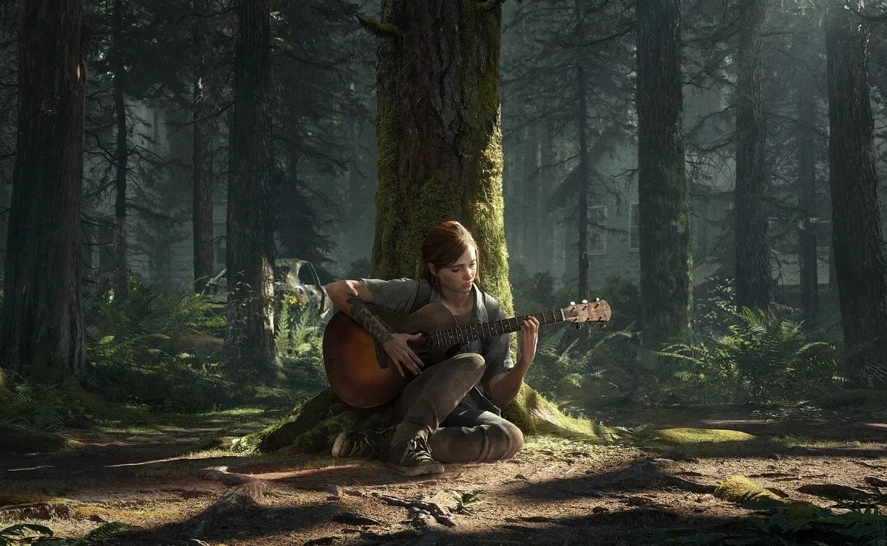
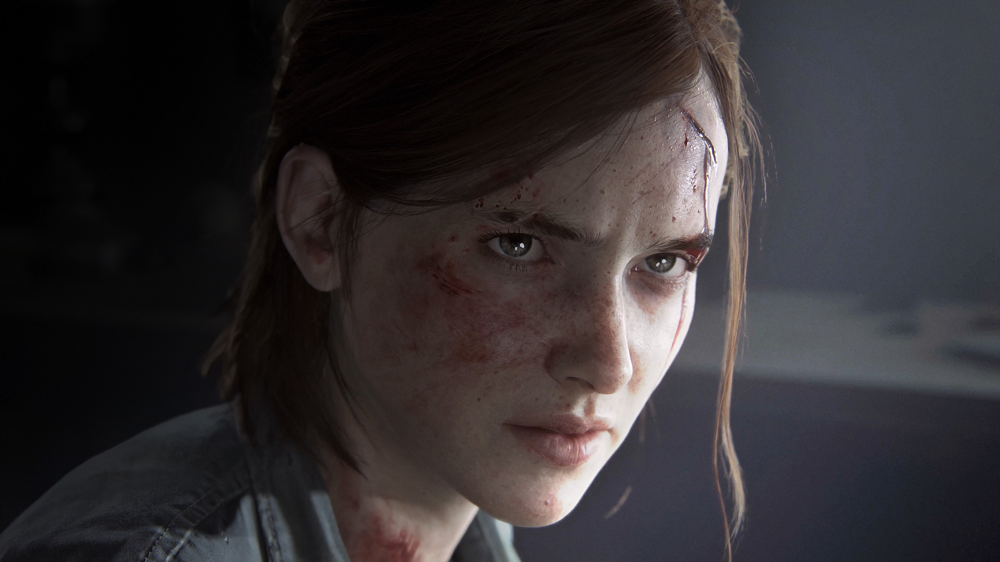
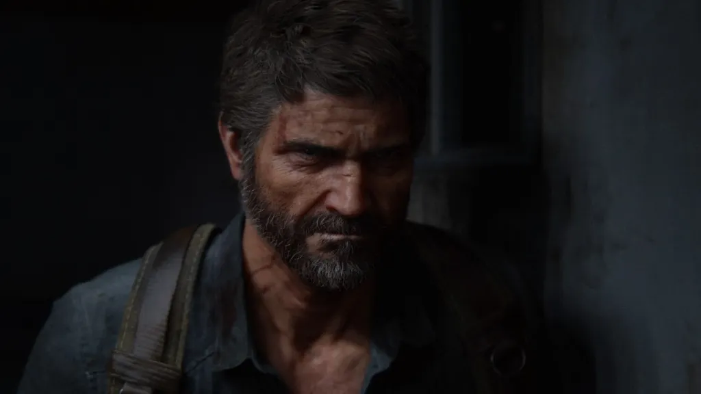

-Las mejores animaciones que se haya visto nunca
-El brutal papel de Ellie
-Una combinación perfecta en el gameplay
-La inteligencia artificial de enemigos y aliados
-El uso de la verticalidad con gran maestría
La brillantez en lo técnico y en la banda sonora
La amplitud para ofrecer mayores opciones
Una narrativa arriesgada y profunda
La excepcional dirección artística


Ellie Williams
Ellie no es una chica perfecta, eso está claro, pero precisamente esa es su mayor virtud. Es un poco malhablada, despegada en un inicio y muy sentimental, lo que provoca una enorme empatía con su personalidad y su manera de ver las cosas.

Joel Miller
Joel es un operador despiadado en el mercado negro subterráneo. Independiente e ingenioso, se endureció tras una trágica pérdida.
Abigail Anderson
A pesar de su reputación de luchadora formidable, oculta su vulnerabilidad bajo una presencia estoica e imponente. Anteriormente, ella y su padre formaban parte de las Luciérnagas hasta que, tras un trágico accidente, Abby quedó sola. Ahora debe encontrar su identidad, un sentido y un propósito más allá de su necesidad de justicia.
Dina
Optimista y tenaz, es la mejor amiga y confidente de Ellie. Al igual que Ellie, también quedó huérfana desde pequeña y se vio obligada a sobrevivir por su cuenta y a ser autosuficiente. Su fuerte moral rectora y su naturaleza honesta sacan lo mejor de Ellie.